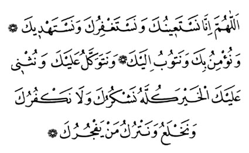

NAMAZDA OKUNAN DUALAR
Sübhaneke |
|
Sübhânekellâhümme
ve bi hamdik ve tebârakesmük ve teâlâ ceddük (ve celle senâük*)
ve lâ ilâhe ðayrük) |
| Allah'ým! Sen eksik sýfatlardan pak ve uzaksýn. Seni daima böyle tenzih eder ve överim. Senin adýn mübarektir. Varlýðýn her þeyden üstündür. Senden baþka ilah yoktur. |
Ettehiyyâtü |
| Ettehiyyâtü lillâhi vessalevâtü vettayibât. Esselâmü aleyke eyyühen-Nebiyyü ve rahmetüllahi ve berakâtühüh. Esselâmü aleynâ ve alâ ibâdillâhis-Sâlihîn. Eþhedü en lâ ilâhe illallâh ve eþhedü enne Muhammeden abdühû ve Rasülüh. |
| Dil ile, beden ve mal ile yapýlan bütün ibadetler Allah'a dýr. Ey Peygamber! Allah'ýn selamý, rahmet ve bereketleri senin üzerine olsun. Selam bizim üzerimize ve Allah'ýn bütün iyi kullarý üzerine olsun. Þahitlik ederim ki, Allah'tan baþka ilah yoktur. Yine þahitlik ederim ki, Muhammed, O'nun kulu ve Peygamberidir. |
Allâhümme Salli |
| Allâhümme salli alâ Muhammedin ve alâ âli Muhammed. Kemâ salleyte alâ Ýbrahime ve alâ âli Ýbrahim. Ýnneke hamidün mecîd. |
| Allah'ým! Muhammed'e ve Muhammed'in ümmetine rahmet eyle; þerefini yücelt. Ýbrahim'e ve Ýbrahim'in ümmetine rahmet ettiðin gibi. Þüphesiz övülmeye layýk yalnýz sensin, þan ve þeref sahibi de sensin. |
Allâhümme Barik |
| Allâhümme barik alâ Muhammedin ve alâ âli Muhammed. Kemâ barekte alâ Ýbrahîme ve alâ âli Ýbrahim. Ýnneke hamidün mecîd. |
| Allah'ým! Muhammed'e ve Muhammed'in ümmetine hayýr ve bereket ver. Ýbrahim'e ve Ýbrahim'in ümmetine verdiðin gibi. Þüphesiz övülmeye layýk yalnýz sensin, þan ve þeref sahibi de sensin. |
Rabbenâ âtina |
|
Rabbenâ âtina fid'dünyâ haseneten ve fil'âhirati haseneten ve kýnâ azâbennâr. Birahmetike yâ Erhamerrahimîn |
| Allah'ým! Bize dünyada iyilik ve güzellik, ahirette de iyilik, güzellik ver. Bizi ateþ azabýndan koru. |
Rabbenâðfirlî |
| Rabbenâðfirlî ve li-vâlideyye ve lil-Mü'minine yevme yekûmü'l hisâb. |
| Ey bizim Rabbimiz! Beni, anamý ve babamý ve bütün mü'minleri hesap gününde (herkesin sorguya çekileceði günde) baðýþla. |
|
Kunut Dualarý |
 |
| Allâhümme innâ nesteînüke ve nestaðfirüke ve nestehdik. Ve nü'minü bike ve netûbü ileyk. Ve netevekkelü aleyke ve nüsni aleykel-hayra küllehü neþkürüke ve lâ nekfürüke ve nahleu ve netrükü men yefcürük. |
| Allahým! Senden yardým isteriz, günahlarýmýzý baðýþlamaný isteriz, razý olduðun þeylere hidayet etmeni isteriz. Sana inanýrýz, sana tevbe ederiz. Sana güveniriz. Bize verdiðin bütün nimetleri bilerek seni hayýr ile öðeriz. Sana þükrederiz. Hiçbir nimetini inkar etmez ve onlarý baþkasýndan bilmeyiz. Nimetlerini inkar eden ve sana karþý geleni býrakýrýz. |
| Allâhümme iyyâke na'büdü ve leke nüsalli ve nescüdü ve ileyke nes'a ve nahfidü nercû rahmeteke ve nahþâ azâbeke inne azâbeke bilküffâri mülhýk. |
| Allahým! Biz yalnýz sana kulluk ederiz. Namazý yalnýz senin için kýlarýz, ancak sana secde ederiz. Yalnýz sana koþar ve sana yaklaþtýracak þeyleri kazanmaya çalýþýrýz. Ýbadetlerini sevinçle yaparýz. Rahmetinin devamýný ve çoðalmasýný dileriz. Azabýndan korkarýz, þüphesiz senin azabýn kafirlere ve inançsýzlara ulaþýr. |